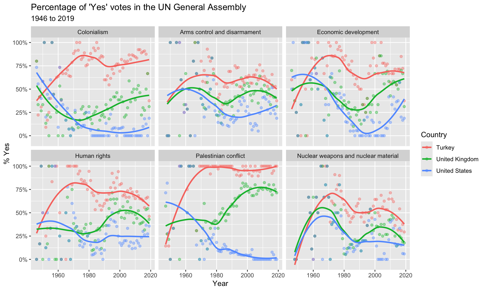
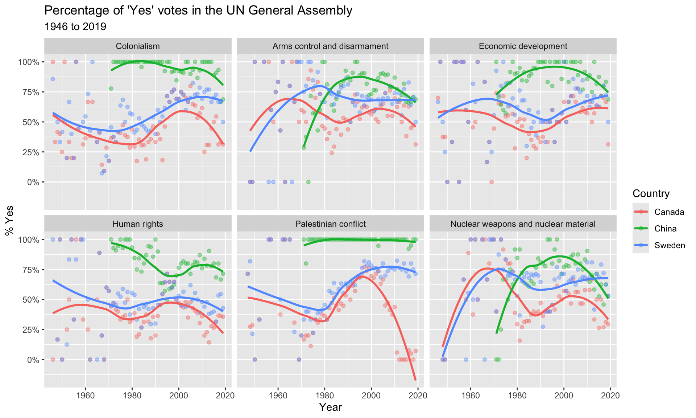

```{r}
#| label: load-packages
#| message: false
#| warning: false
library(tidyverse)
library(lubridate)
library(scales)
library(DT)
library(unvotes)
```AE01 - United Nations Votes (key)
Suggested Answers
Introduction
How do various countries vote in the United Nations General Assembly, how have their voting patterns evolved throughout time, and how similarly or differently do they view certain issues? We’re going to start to answer these questions while learning about Quarto files.
NoteFollow Along
- Log into JupyterHub (will go through SSO)
- Launch Server
- Open RStudio
- In the “Files” pane (lower right corner) Navigate into the “shared/Donatello 385” folder
- Click the box next to
ae01-unvotes.qmd, then “More” and “Copy To”- Click the word “Home” to go back up to your home (root) folder
- Back in the “Files” pane, click “Home” to get back to your home directory
- Click on
ae01-unvotes.qmdto open this file - Click the “Render” button on the top.
- Make the right side window tall and compare what you see left to right.
Packages
We will use the tidyverse, lubridate, and scales packages for data wrangling and visualization, and the DT package for interactive display of tabular output, and the unvotes package for the data.
Data
The data we’re using originally come from the unvotes package. In the chunk below we modify the data by joining the various data frames provided in the package to help you get started with the analysis.
```{r}
#| message: false
#| warning: false
unv <- unvotes::un_votes %>%
inner_join(un_roll_calls, by = "rcid") %>%
inner_join(un_roll_call_issues, by = "rcid")
```We had to add
#| message: falseand#| warning: falseas code chunk options to suppress these messages and warnings. See more options at https://quarto.org/docs/output-formats/html-code.html
UN voting patterns
Let’s create a data visualization that displays how the voting record of the UK & NI changed over time on a variety of issues, and compares it to two other countries: US and Turkey.
```{r}
#| label: plot-yearly-yes-issue
#| fig-width: 10
#| fig-height: 6
#| message: false
#| warning: false
unv %>%
filter(country %in% c("United Kingdom", "United States", "Turkey")) %>%
mutate(year = year(date)) %>%
group_by(country, year, issue) %>%
summarize(percent_yes = mean(vote == "yes")) %>%
ggplot(mapping = aes(x = year, y = percent_yes, color = country)) +
geom_point(alpha = 0.4) +
geom_smooth(method = "loess", se = FALSE) +
facet_wrap(~issue) +
scale_y_continuous(labels = percent) +
labs(
title = "Percentage of 'Yes' votes in the UN General Assembly",
subtitle = "1946 to 2019",
y = "% Yes",
x = "Year",
color = "Country"
)
```
I noticed that the percent of ‘Yes’ votes by Turkey (denoted by the red line) regarding the Palestinian conflict has been at nearly 100% since 1970, but the percent ‘yes’ voted by the United States has been decliding and below 10% since 1980. Clearly these two countries disagree a lot on this conflict. Actually, across all topics it seems like Turkey votes “yes” more often than either the UK or US (the red line is above 50% most years), with US voting “no” more often than not (blue line is below 50% most years).
We can easily change which countries are being plotted by changing which countries the code above filters for. Note that the country name should be spelled and capitalized exactly the same way as it appears in the data. See the Appendix for a list of the countries in the data.
```{r}
#| label: plot-yearly-yes-issue2
#| fig-width: 10
#| fig-height: 6
#| message: false
#| warning: false
unv %>%
filter(country %in% c("Canada", "China", "Sweden")) %>%
mutate(year = year(date)) %>%
group_by(country, year, issue) %>%
summarize(percent_yes = mean(vote == "yes")) %>%
ggplot(mapping = aes(x = year, y = percent_yes, color = country)) +
geom_point(alpha = 0.4) +
geom_smooth(method = "loess", se = FALSE) +
facet_wrap(~issue) +
scale_y_continuous(labels = percent) +
labs(
title = "Percentage of 'Yes' votes in the UN General Assembly",
subtitle = "1946 to 2019",
y = "% Yes",
x = "Year",
color = "Country"
)
```
First thing I noticed is that the green line representing China does not show up until around 1980. This must be when they joined the UN. The voting pattern for China is similar to what I saw with Turkey before - most of the time they vote ‘yes’ on issues. With the exception of Palestine conflict the have been voting yes less frequently in the past 20 years - the slope of the green line has been steadly decreasing since 2000. The voting patterns for Canada (red line) and Sweden (blue line) are very similar - both countries have similar percent ‘yes’ votes per year, with the major exception being the past 10 years on the Palestinian conflict.
NoteGrading criteria
Here are some characteristics of a submission to recieve full credit
- All code chunks ran
- All ‘you try it’s’ are answered
- The YAML header is updated with todays date and your name
- An attempt at interpreting the plots in full english sentences, in full context of the situation and describing specific features of the plot to justify your interpretations.
References
- David Robinson (2017). unvotes: United Nations General Assembly Voting Data. R package version 0.2.0.
- Erik Voeten “Data and Analyses of Voting in the UN General Assembly” Routledge Handbook of International Organization, edited by Bob Reinalda (published May 27, 2013).
- Much of the analysis has been modeled on the examples presented in the unvotes package vignette.